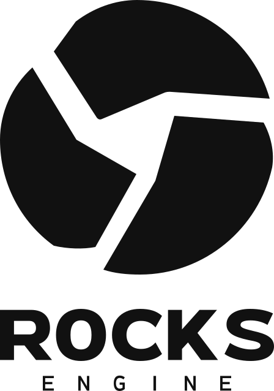

Visual
identity.
A compact core. Three solid segments. A clear, confident signature for Rocks Engine.
WORKING IDENTITY · 14 NOVEMBER 2026Read the complete specification ↗

The logo system
Use the symbol alone in compact spaces. Use a complete lockup when the brand name needs to be explicit. All masters use paths and a transparent background.


The supplied C2 artwork is a manually constructed vector interpretation of the concept. The wordmark and ENGINE descriptor are custom outlined lettering. Do not recreate either with live text.
Color palette
Monochrome is the core identity. Warm Ivory supports presentations; Slate and Rule Gray support information. No accent color is assigned.
RGB 17 · 17 · 17
Primary logo / surfaces
RGB 255 · 255 · 255
Reversed logo / background
RGB 245 · 242 · 235
Presentation background
RGB 102 · 102 · 102
Secondary text
RGB 216 · 213 · 206
Rules / dividers
Digital values: sRGB. One-color print: C0 M0 Y0 K100. Reversed print: paper knockout or a production-specific white ink. Supporting print colors require a destination ICC conversion; no Pantone reference is assigned.
Supporting typography
Use the designated fonts for communication and interface text. The logo itself is custom vector artwork, independent of these fonts.
Latin display and section headings.
ExtraBold 800 / SemiBold 600.
Korean headings, multilingual body copy and UI.
Regular 400 / SemiBold 600 / Bold 700.
| Role | Typeface / weight | Tracking | Line height |
|---|---|---|---|
| Latin display | Montserrat / 800 | −0.02em | 1.10 |
| Latin section heading | Montserrat / 600 | −0.01em | 1.25 |
| Korean heading | Pretendard / 700 | −0.02em | 1.30 |
| Body copy | Pretendard / 400 | 0 | 1.60 |
| UI label | Pretendard / 600 | 0 | 1.40 |
| Uppercase eyebrow | Montserrat / 600 | +0.12em | 1.40 |
Suggested sizes: display 48–72 px desktop / 32–40 px mobile; section headings 24–32 px; body 16 px; labels 14 px. Font binaries are not bundled. This page uses locally installed fonts and system fallbacks, so its typography is not a font-file proof.
Official sources: Montserrat · Pretendard. Both are distributed under SIL Open Font License 1.1; retain the appropriate license notices when distributing font files.
Give the mark room
Keep a protective margin around the complete visible artwork. The SVG canvas does not include the full clear-space area.
H is the nominal symbol height in the selected master. Keep at least x clear on every side of the entire lockup, including the descriptor.
Symbol / stacked: H = 448, x = 56 units.
Horizontal: H = 192, x = 24 units.
Example: a horizontal logo displayed at 344 × 96 px needs a 12 px margin on all sides. Keep text, borders, imagery and container edges outside that margin.
Minimum size
Use the symbol alone when space is limited. These are initial production recommendations; verify the final output on its target medium.
| Asset | Digital width | Print width |
|---|---|---|
| Symbol | 24 px | 8 mm |
| Stacked logo | 160 px | 30 mm |
| Horizontal logo | 240 px | 45 mm |
A 16 px favicon requires a separately optimized raster variant. It is not part of this package. Do not use a full lockup at favicon sizes.
Consistent in every setting
Choose a positive or reversed asset to preserve a clean silhouette. On busy imagery, place the logo on a solid brand panel.
Use
- Black artwork on White or Warm Ivory.
- White artwork on Black or a dark, even surface.
- Original proportions and fixed orientation.
- Clear space around the whole signature.
- The supplied outlined lettering.
- A solid panel on busy or changing imagery.
Avoid
- Stretching, skewing, rotation or cropping.
- Moving or recoloring individual segments.
- Gradients, bevels, glow and drop shadows.
- Adding a ring or decorative badge.
- Typing a replacement wordmark.
- Changing symbol and lettering proportions.
Internal legibility target: at least 3:1 contrast between the symbol and a flat background. This is a brand target, not a WCAG requirement for logos. Select the white asset explicitly instead of applying an automatic dark-mode filter.
Master files & exports
SVG is the editable vector source. PNG is a transparent raster export from the same geometry. Black and white versions share identical paths.
| Asset | Black | White | PNG dimensions |
|---|---|---|---|
| Symbol | SVGPNG | SVGPNG | 1024 × 1024 |
| Stacked | SVGPNG | SVGPNG | 896 × 1276 |
| Horizontal | SVGPNG | SVGPNG | 1376 × 384 |


The white files are transparent white artwork and may look empty on a white preview canvas. View them over a dark background. Read README.md for construction measurements, print handling, typography, and implementation notes.